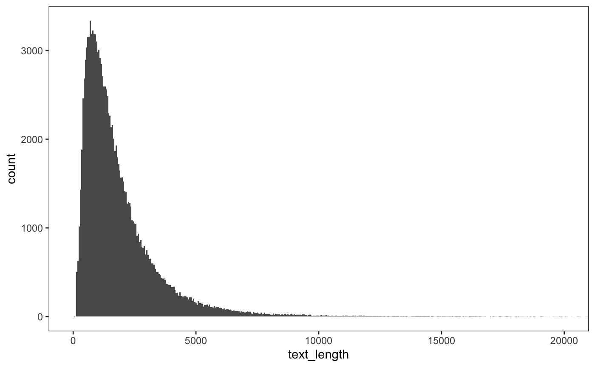

vignettes/dreamjournal/dreamjournal.Rmd
dreamjournal.Rmddreamjournal is a data set of written dream reports.
“Dream Journal is a free service that allows you to create and customize your very own online dream journal. You may update your dream journal as often as you’d like. Your journal may be kept private for your own viewing, or be made public. We only display the information you want displayed. It’s free, it’s fun, and it’s easy to use!”
The dreamjournal data set in tmasc contains written reports of 131661 dreams, in a tidy tibble ready for text mining, visual, and statistical analyses in R (or other software.)
## # A tibble: 6 x 15
## id dream user date rating cohesion lucidity views themes
## <chr> <chr> <chr> <date> <int> <int> <int> <int> <list>
## 1 1000… Hote… Zeni… 2007-03-04 60 NA NA 1706 <chr …
## 2 1000… Kris… simp… 2007-03-26 100 25 NA 266 <chr …
## 3 1000… stal… pret… 2006-02-11 80 NA NA 240 <chr …
## 4 1000… psyc… kiss… 2007-03-26 40 50 NA 568 <chr …
## 5 1000… Gran… Sabo… 2007-03-26 60 NA NA 3167 <chr …
## 6 1000… Gian… Adra… 2007-03-26 60 NA NA 584 <chr …
## # … with 6 more variables: settings <list>, characters <list>,
## # emotions <list>, activities <list>, keywords <list>, text <chr>dreamjournal has “metadata” associated with each dream, including
date: When the dream occurredrating: Rating of the dream report (0-100)cohesion: Rating of the “cohesion” the dream report (0-100)lucidity: Rating of the lucidity the dream report (0-100)views: How many time the dream has been viewed on Dream Journal
text: The actual text of the report.In addition to these, many dreams are logged with tags and keywords, listed as themes, settings, characters, emotions, activities, and keywords. Each of these columns is a list-column of character vectors, because users could report multiple tags in each category.
Here’s a sampling of a few short dream reports:
dreamjournal %>%
filter(rating == 100) %>%
mutate(n = nchar(text)) %>%
filter(between(n, 140, 160)) %>%
arrange(n) %>%
select(dream, views, text) %>%
kable()| dream | views | text |
|---|---|---|
| Lump in my tummy, bed outside grandma’s | 700 | I had a hernia. |
| Entry 14 - My Worst Fear | 274 | I was alone forever. |
| powerless | 270 | blood, snow flakes |
| jobs | 297 | I had found a new job. |
| Test Dream | 262 | I dreamt my site was better |
| Fish Tank | 267 | I was a fish in a fish tank. |
| The Ark | 87 | It was colder today, much colder. |
| Cheyenne | 132 | I dreamed that cheyenne was kuala |
Of course, most dreams are much longer:
dreamjournal %>%
mutate(text_length = nchar(text)) %>%
ggplot(aes(x=text_length)) +
geom_histogram(binwidth=50) +
coord_cartesian(xlim = c(0, 20000))